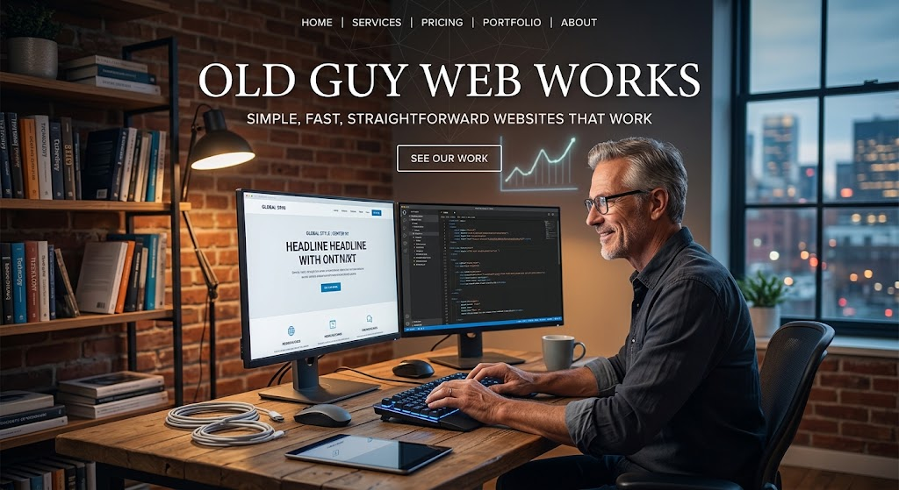

Portfolio

Take a Look at Our Projects
Every website in this portfolio was built from the ground up using HTML, CSS, and JavaScript. These projects represent the kind of practical, straightforward websites Old Guy Web Works can create for small businesses, organizations, and individuals.
The portfolio is still growing. I am currently looking for one or two additional small projects that I can build at no charge in exchange for being able to showcase the finished website here. If you have a simple website project in mind, I'd be happy to talk about it.
Old Guy Web Works
This website is the home of Old Guy Web Works and serves as an example of the type of professional, straightforward website I can build for a small business or individual.
View WebsiteThe Sidney Project
This website was created for a foundation supporting children who need shoes. It was a project completed for one of my blog followers and gave me the opportunity to create a site around a meaningful community purpose.
View WebsiteBeing Kevin
Being Kevin is my independent blog project. I created the site from the ground up as a separate blogging platform and as an example of how a custom website can support a personal brand and ongoing content.
View Website